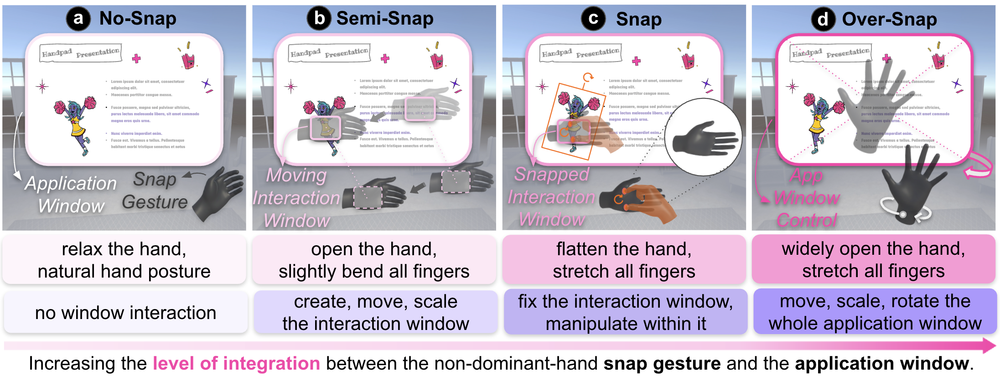
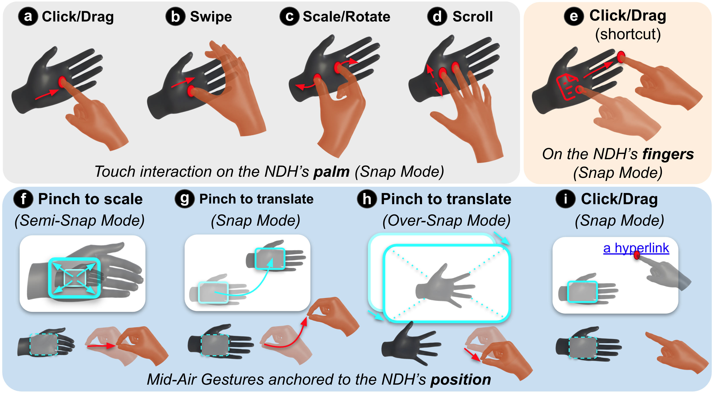
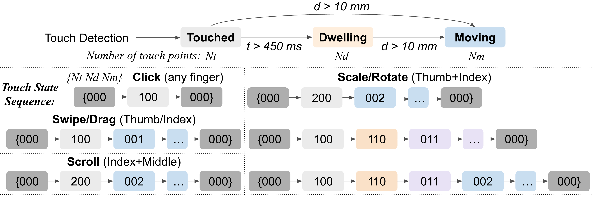
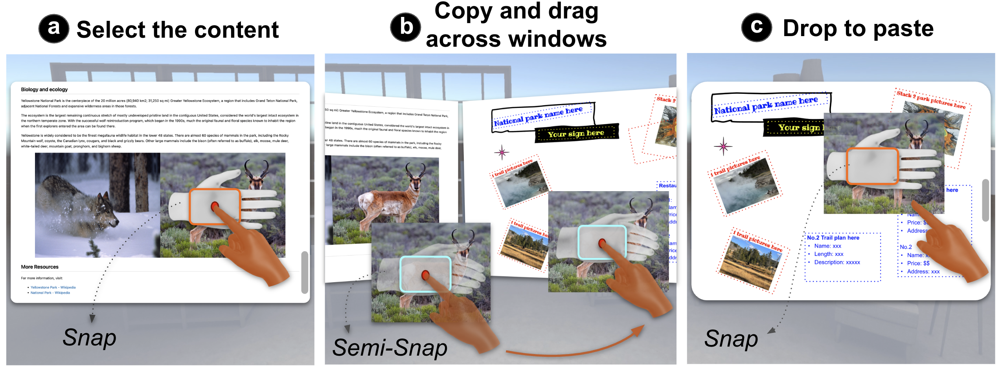
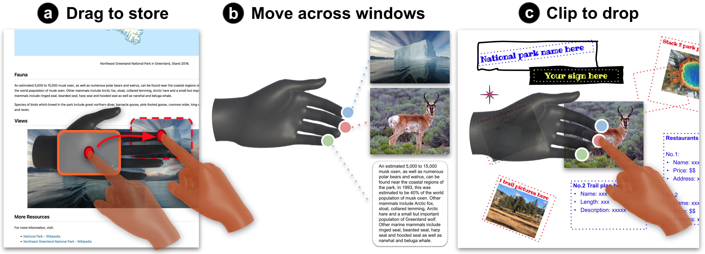
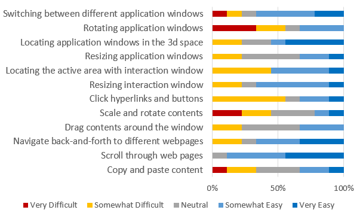

HandPad uses the non-dominant hand to establish spatial frames and interaction contexts while the dominant hand performs fine-grained window manipulation.
Abstract
Virtual Reality offers potential for productivity work by creating expansive displays anywhere, yet current systems often rely on external input devices that limit on-the-go mobile VR use.
We introduce HandPad, a suite of bare-hand interaction techniques that leverage asymmetric bimanual coordination and self-haptic support. The non-dominant hand establishes spatial frames and interaction contexts, while the dominant hand performs fine-grained manipulation.
The palm surface of the non-dominant hand serves as a physical touch surface, and both hands are spatially remapped to virtual windows for comfortable direct interaction. An exploratory study showed that HandPad enables efficient and ergonomic interaction for knowledge work in VR.
Video
HandPad Design
HandPad treats the non-dominant hand as a mobile reference frame, a tangible touch surface, and a mode-switching input. This lets the dominant hand manipulate virtual windows through touch and mid-air gestures while both physical hands remain in a comfortable posture.
Non-Dominant Hand Gestures
The non-dominant hand switches the interaction context and anchors the virtual workspace.

Dominant Hand Gestures
The dominant hand combines on-palm touch with familiar mid-air gestures for precise manipulation.

Touch and Gesture Detection
HandPad detects on-palm touch states and maps them to interaction gestures for direct window control.
View detection detailsTouch Detection & State Machine. HandPad first tracks touch contact, dwell time, movement distance, and the number of active touch points. These signals classify each contact as touched, dwelling, or moving.
Gesture Recognition. The system then maps touch-state sequences and touch-point counts to interaction gestures, including clicks, swipes or drags, two-finger scrolling, and thumb-index scale or rotate actions.

The top layer detects touch states from contact, dwell, movement, and touch-point count. The bottom layer recognizes gestures by matching state sequences to clicks, swipes or drags, scrolling, and scale or rotate actions.
Interaction Techniques
Together, the two hands support cross-window workflows and lightweight shortcuts.


Study Highlights

Participants completed productivity-oriented tasks using multiple VR windows: an open-book quiz and a poster design task.
Usability

Participants rated interaction-window resizing and locating positively, and they generally found scrolling and multi-touch content manipulation useful for productivity tasks.
Window rotation was more difficult because free hand motion introduced many degrees of freedom, suggesting that future systems may benefit from constraints such as axis locking or stabilization.
Takeaways
- HandPad shows how a bare hand can become both an input device and a spatial reference frame.
- Participants described the non-dominant palm as feeling like a touchpad or touchscreen, making sustained interactions such as scrolling, dragging, and multi-touch manipulation more stable than pure mid-air input.
- Hybrid input is important: hand-surface interaction supports precision and control, while mid-air gestures remain useful for quick lightweight actions around the active interaction area.
Citation
BibTeX@article{ying2026handpad,
title = {HandPad: A Bimanual Hand Interface for Fluid Window Interactions in VR},
author = {Ying, Wen and Rahman, Adil and Hu, Erzhen and Heo, Seongkook},
journal = {arXiv preprint},
year = {2026},
keywords = {Gestures, bimanual interaction, input remapping, virtual reality}
}